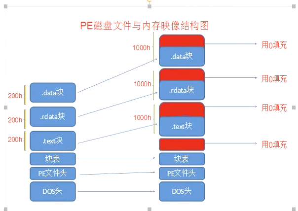

# 为什么扩大节？
我们可以在任意空白区添加自己的代码，但如果添加的代码比较多，空白区不够怎么办？
无法新增节表的时候，就要扩大最后一个节了。
上面我们讲了，空白区添加我们的代码。但是有的时候。我们的空白区不够了怎么办。所以需要进行扩大节.
扩大节其实很简单。修改节数据对齐后的大小即可。并且在 PE 文件中添加 0 数据进行填充即可.
首先看一下我们的节表
typedef struct _IMAGE_SECTION_HEADER { | |
BYTE Name[IMAGE_SIZEOF_SHORT_NAME]; //8 个字节名字。自己可以起。编译器也可以给定。不重要. | |
union { | |
DWORD PhysicalAddress; | |
DWORD VirtualSize; // 节数据没有对齐后的大小。也就是没有对齐。节数据有多大. | |
} Misc; | |
DWORD VirtualAddress; // 加载到内存中的第一个字节的地址。也就是虚拟地址。节在内存中哪里开始。内存中的 VA + ImageBase 才是真正的节开始位置 | |
DWORD SizeOfRawData; // 修改这个属性的值，即可扩大节。并且在 PE 文件中添加相应的 0 数据进行填充. | |
DWORD PointerToRawData; // 在文件中的偏移。是文件对齐成员倍数. | |
DWORD PointerToRelocations; // 一下都是调试相关. | |
DWORD PointerToLinenumbers; // | |
WORD NumberOfRelocations; | |
WORD NumberOfLinenumbers; | |
DWORD Characteristics; // 节的属性 | |
} IMAGE_SECTION_HEADER, *PIMAGE_SECTION_HEADER; |
# 扩大哪一个节呢？

若是扩大前面几个节，则后面的节都要改动。所以一般扩大最后一个节。
# 扩大节的步骤
分配一块新的空间，大小为
S将最后一个节的 SizeOfRawData 和 VirtualSize 改为 N
N = (SizeOfRawData或者VirtualSize内存对齐后的值) + S修改 SizeOflmage 大小
# 代码实现
LPVOID IncreaseSection(LPVOID pFileBuffer, size_t ExtendSize) | |
{ | |
// 计算 PE 文件在内存中的大小 | |
size_t Size = CalcSize(pFileBuffer); | |
LPVOID pNewBuffer = malloc(Size + ExtendSize); | |
if (!pNewBuffer) | |
{ | |
printf("新增节，开辟pNewImageBuffer内存失败"); | |
free(pFileBuffer); | |
} | |
memcpy(pNewBuffer, pFileBuffer, Size + ExtendSize); | |
free(pFileBuffer); | |
PIMAGE_DOS_HEADER pDosHeader = (PIMAGE_DOS_HEADER)pNewBuffer; | |
PIMAGE_NT_HEADERS pNTHeader = (PIMAGE_NT_HEADERS)((DWORD)pDosHeader + pDosHeader->e_lfanew); | |
PIMAGE_FILE_HEADER pFileHeader = (PIMAGE_FILE_HEADER)((DWORD)pDosHeader + pDosHeader->e_lfanew + 4); | |
PIMAGE_OPTIONAL_HEADER32 pOptionHeader = (PIMAGE_OPTIONAL_HEADER32)((DWORD)pFileHeader + sizeof(IMAGE_FILE_HEADER)); | |
PIMAGE_SECTION_HEADER pSectionHeader = (PIMAGE_SECTION_HEADER)((DWORD)pOptionHeader + pFileHeader->SizeOfOptionalHeader); | |
// 判断节表后的空白区是否足够 80 字节，若不够则移动 NT 头 | |
if (pOptionHeader->SizeOfHeaders - ((PBYTE)&pSectionHeader[pFileHeader->NumberOfSections] - pNewBuffer) < 80) | |
{ | |
DWORD dwRet = MoveNTHeaderAndSectionHeadersToDosStub(pNewBuffer); | |
printf("节表空间不足，NT头和节表向低地址移动了 %d 字节\n", dwRet); | |
if (dwRet < 80) | |
{ | |
printf("移动后仍没有足够的80字节空间插入新节表\n"); | |
free(pNewBuffer); | |
return 0; | |
} | |
// 更新指针 | |
PIMAGE_DOS_HEADER pDosHeader = (PIMAGE_DOS_HEADER)pNewBuffer; | |
PIMAGE_NT_HEADERS pNTHeader = (PIMAGE_NT_HEADERS)((DWORD)pDosHeader + pDosHeader->e_lfanew); | |
PIMAGE_FILE_HEADER pFileHeader = (PIMAGE_FILE_HEADER)((DWORD)pDosHeader + pDosHeader->e_lfanew + 4); | |
PIMAGE_OPTIONAL_HEADER32 pOptionHeader = (PIMAGE_OPTIONAL_HEADER32)((DWORD)pFileHeader + sizeof(IMAGE_FILE_HEADER)); | |
PIMAGE_SECTION_HEADER pSectionHeader = (PIMAGE_SECTION_HEADER)((DWORD)pOptionHeader + pFileHeader->SizeOfOptionalHeader); | |
} | |
// 在节表最后新增一个节表 并修正新增节表的属性 | |
PWORD pNumberOfSections = &(pFileHeader->NumberOfSections); // 节的数量 | |
PIMAGE_SECTION_HEADER pLastSectionHeader = pSectionHeader + *pNumberOfSections - 1; // 最后一个节表 | |
PIMAGE_SECTION_HEADER pNewSectionHeader = pSectionHeader + *pNumberOfSections; // 新节表插入点 | |
//1、Name: 名字随便修改，不能超过八个字节。 | |
memcpy(pNewSectionHeader->Name, ".newsec", 8); | |
//2、VirtualSize : 申请的新节空间大小，比如 1000 | |
pNewSectionHeader->Misc.VirtualSize = ExtendSize; | |
//3、VirtualAddress : 等于上一个节的 VirtualAddress + SizeOfRawData。 这个成员指定了这个节在内存哪里展开。所以需要修改。 | |
pNewSectionHeader->VirtualAddress = pLastSectionHeader->VirtualAddress + pLastSectionHeader->SizeOfRawData; | |
//4、SizeOfRawData：设置可以和 VirtualSize 一样，比如 0x1000。我们新增的节，自己需要在 PE 文件添加一段节数据，数据的大小按照文件对齐添加，并且填写到这个成员中。 | |
pNewSectionHeader->SizeOfRawData = ExtendSize; | |
//5、PointerToRawData：等于上一个节的 PointerToRawData + SizeOfRawData。我们指定了内存中从哪里展开节。那么也需要指定这个节在文件中在哪里展开 | |
pNewSectionHeader->PointerToRawData = pLastSectionHeader->PointerToRawData + pLastSectionHeader->SizeOfRawData; | |
//6、PointerToRelocation：设置成零 | |
pNewSectionHeader->PointerToRelocations = 0; | |
//7、PointerToLineNumbers：设置成零 | |
pNewSectionHeader->PointerToLinenumbers = 0; | |
//8、NumberOfLineRelocations：设置成零 | |
pNewSectionHeader->NumberOfRelocations = 0; | |
//9、NumberOfLineNumbers：设置成零 | |
pNewSectionHeader->NumberOfLinenumbers = 0; | |
//10、Characteristics：块属性 | |
pNewSectionHeader->Characteristics = pSectionHeader->Characteristics; | |
// 修改标准 PE 头中节的数量 | |
pFileHeader->NumberOfSections = *pNumberOfSections + 1; | |
// 修改 SizeOfImage 的大小 | |
pOptionHeader->SizeOfImage += Align(pNewSectionHeader->Misc.VirtualSize, pOptionHeader->SectionAlignment); | |
//WritePeFile(pNewImageBuffer); | |
return pNewBuffer; | |
} |